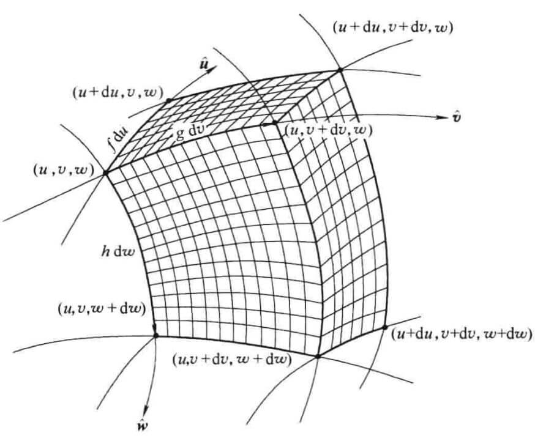

d e f φ , ϕ 为标量函数 , f , g 为矢量函数 \boldsymbol{def}\quad \varphi, \phi 为标量函数, \boldsymbol{f},\boldsymbol{g} 为矢量函数 def φ , ϕ 为标量函数 , f , g 为矢量函数 注意由 ∇ \nabla ∇
∇ ( φ ϕ ) = ∇ ( φ c ϕ ) + ∇ ( φ ϕ c ) = φ ∇ ϕ + ϕ ∇ φ \begin{align}
\nabla (\varphi \phi)&=\nabla (\varphi_c \phi)+\nabla(\varphi\phi_c) \\&=\varphi\nabla\phi+\phi\nabla\varphi
\end{align} ∇ ( φϕ ) = ∇ ( φ c ϕ ) + ∇ ( φ ϕ c ) = φ ∇ ϕ + ϕ ∇ φ ∇ ⋅ ( φ f ) = ∇ ⋅ ( φ c f ) + ∇ ⋅ ( φ f c ) = φ ∇ ⋅ f + ∇ φ ⋅ f \begin{align}
\nabla \cdot(\varphi \boldsymbol{f})&=\nabla \cdot(\varphi_c \boldsymbol{f})+\nabla \cdot(\varphi \boldsymbol{f}_c) \\&=\varphi \nabla \cdot \boldsymbol{f}+\nabla \varphi \cdot \boldsymbol{f}
\end{align} ∇ ⋅ ( φ f ) = ∇ ⋅ ( φ c f ) + ∇ ⋅ ( φ f c ) = φ ∇ ⋅ f + ∇ φ ⋅ f ∇ × ( φ f ) = ∇ × ( φ c f ) + ∇ × ( φ f c ) = φ ∇ × f + ∇ φ × f \begin{align}
\nabla \times (\varphi \boldsymbol{f})&=\nabla \times (\varphi_c \boldsymbol{f})+\nabla \times (\varphi \boldsymbol{f}_c) \\&=\varphi \nabla\times \boldsymbol{f}+\nabla \varphi\times \boldsymbol{f}
\end{align} ∇ × ( φ f ) = ∇ × ( φ c f ) + ∇ × ( φ f c ) = φ ∇ × f + ∇ φ × f ∇ ⋅ ( f × g ) = ∇ ⋅ ( f c × g ) + ∇ ⋅ ( f × g c ) = − f c ⋅ ( ∇ × g ) + g c ( ∇ × f ) = − f ⋅ ( ∇ × g ) + g ⋅ ( ∇ × f ) \begin{align}
\nabla \cdot (\boldsymbol{f}\times \boldsymbol{g})&=\nabla\cdot(\boldsymbol{f}_c\times \boldsymbol{g})+\nabla\cdot(\boldsymbol{f}\times \boldsymbol{g}_c)\\&=-\boldsymbol{f}_c\cdot(\nabla\times \boldsymbol{g})+\boldsymbol{g}_c(\nabla\times \boldsymbol{f})\\&=-\boldsymbol{f}\cdot(\nabla\times \boldsymbol{g})+\boldsymbol{g}\cdot(\nabla\times \boldsymbol{f})
\end{align} ∇ ⋅ ( f × g ) = ∇ ⋅ ( f c × g ) + ∇ ⋅ ( f × g c ) = − f c ⋅ ( ∇ × g ) + g c ( ∇ × f ) = − f ⋅ ( ∇ × g ) + g ⋅ ( ∇ × f )
注意
这个式子第二步化简是用混合积的轮换对称性，将 ∇ \nabla ∇ ∇ \nabla ∇ f ⋅ ( g × ∇ ) \boldsymbol{f}\cdot(\boldsymbol{g}\times \nabla) f ⋅ ( g × ∇ )
∇ × ( f × g ) = ∇ × ( f c × g ) + ∇ × ( f × g c ) = ( ∇ ⋅ g ) f c − ( f c ⋅ ∇ ) g + ( g c ⋅ ∇ ) f − ( ∇ ⋅ f ) g c = ( ∇ ⋅ g ) f − ( f ⋅ ∇ ) g + ( g ⋅ ∇ ) f − ( ∇ ⋅ f ) g \begin{align}
\nabla\times (\boldsymbol{f}\times \boldsymbol{g})&=\nabla \times (\boldsymbol{f}_c\times \boldsymbol{g})+\nabla\times (\boldsymbol{f}\times \boldsymbol{g}_c)\\&=(\nabla \cdot\boldsymbol{g})\boldsymbol{f}_c-(\boldsymbol{f}_c\cdot\nabla)\boldsymbol{g}+(\boldsymbol{g}_c\cdot\nabla)\boldsymbol{f}-(\nabla\cdot \boldsymbol{f})\boldsymbol{g}_c\\&= (\nabla \cdot\boldsymbol{g})\boldsymbol{f}-(\boldsymbol{f}\cdot\nabla)\boldsymbol{g}+(\boldsymbol{g}\cdot\nabla)\boldsymbol{f}-(\nabla\cdot \boldsymbol{f})\boldsymbol{g}
\end{align} ∇ × ( f × g ) = ∇ × ( f c × g ) + ∇ × ( f × g c ) = ( ∇ ⋅ g ) f c − ( f c ⋅ ∇ ) g + ( g c ⋅ ∇ ) f − ( ∇ ⋅ f ) g c = ( ∇ ⋅ g ) f − ( f ⋅ ∇ ) g + ( g ⋅ ∇ ) f − ( ∇ ⋅ f ) g
注意
上面最后一个式子前两项由 ∇ × ( f c × g ) \nabla \times (\boldsymbol{f}_c\times \boldsymbol{g}) ∇ × ( f c × g ) ∇ × ( f × g c ) \nabla\times (\boldsymbol{f}\times \boldsymbol{g}_c) ∇ × ( f × g c )
下面化简如下式子 ∇ ( f ⋅ g ) \nabla(\boldsymbol{f}\cdot \boldsymbol{g}) ∇ ( f ⋅ g )
由矢量运算可知
A × ( B × C ) = ( A ⋅ C ) B − ( A ⋅ B ) C \boldsymbol{A}\times (\boldsymbol{B}\times \boldsymbol{C})=(\boldsymbol{A}\cdot \boldsymbol{C})\boldsymbol{B}-(\boldsymbol{A}\cdot \boldsymbol{B})\boldsymbol{C} A × ( B × C ) = ( A ⋅ C ) B − ( A ⋅ B ) C 那么就有
B ( A ⋅ C ) = A × ( B × C ) + ( A ⋅ B ) C \boldsymbol{B}(\boldsymbol{A}\cdot \boldsymbol{C})=\boldsymbol{A}\times (\boldsymbol{B}\times \boldsymbol{C})+(\boldsymbol{A}\cdot \boldsymbol{B})\boldsymbol{C} B ( A ⋅ C ) = A × ( B × C ) + ( A ⋅ B ) C 将上式 C = ∇ \boldsymbol{C}=\nabla C = ∇
∇ ( f ⋅ g ) = ∇ ( f c ⋅ g ) + ∇ ( f ⋅ g c ) = f c × ( ∇ × g ) + ( f c ⋅ ∇ ) g + g c × ( ∇ × f ) + ( g ⋅ ∇ ) f = f × ( ∇ × g ) + ( f ⋅ ∇ ) g + g × ( ∇ × f ) + ( g ⋅ ∇ ) f \begin{align}
\nabla(\boldsymbol{f}\cdot\boldsymbol{g})&=\nabla(\boldsymbol{f}_c\cdot \boldsymbol{g})+\nabla(\boldsymbol{f}\cdot \boldsymbol{g}_c)\\&=\boldsymbol{f}_c\times (\nabla\times \boldsymbol{g})+(\boldsymbol{f}_c\cdot \nabla)\boldsymbol{g}+\boldsymbol{g}_c\times (\nabla\times \boldsymbol{f})+(\boldsymbol{g}\cdot \nabla)\boldsymbol{f}\\&=\boldsymbol{f}\times (\nabla\times \boldsymbol{g})+(\boldsymbol{f}\cdot \nabla)\boldsymbol{g}+\boldsymbol{g}\times (\nabla\times \boldsymbol{f})+(\boldsymbol{g}\cdot \nabla)\boldsymbol{f}
\end{align} ∇ ( f ⋅ g ) = ∇ ( f c ⋅ g ) + ∇ ( f ⋅ g c ) = f c × ( ∇ × g ) + ( f c ⋅ ∇ ) g + g c × ( ∇ × f ) + ( g ⋅ ∇ ) f = f × ( ∇ × g ) + ( f ⋅ ∇ ) g + g × ( ∇ × f ) + ( g ⋅ ∇ ) f 直角系到球坐标系
x = r sin θ cos ϕ y = r sin θ sin ϕ z = r cos θ \begin{align}
x&=r\sin \theta \cos \phi \\ y&=r \sin \theta \sin \phi \\ z&=r \cos \theta
\end{align} x y z = r sin θ cos ϕ = r sin θ sin ϕ = r cos θ 球坐标系到直角坐标系
r = x 2 + y 2 + z 2 θ = arccos z x 2 + y 2 + z 2 ϕ = arctan y x \begin{align}
r&=\sqrt{x^2+y^2+z^2} \\ \theta &=\arccos \frac{z}{\sqrt{x^2+y^2+z^2}} \\ \phi &= \arctan \frac{y}{x}
\end{align} r θ ϕ = x 2 + y 2 + z 2 = arccos x 2 + y 2 + z 2 z = arctan x y 写出 ( r ^ , θ ^ , ϕ ^ ) (\boldsymbol{\hat{r}},\boldsymbol{\hat{\theta}},\boldsymbol{\hat{\phi}}) ( r ^ , θ ^ , ϕ ^ ) ( x ^ , y ^ , z ^ ) (\boldsymbol{\hat{x}},\boldsymbol{\hat{y}},\boldsymbol{\hat{z}}) ( x ^ , y ^ , z ^ )
r ^ = ( 1 , θ , ϕ ) θ ^ = ( 1 , θ + π 2 , ϕ ) ϕ ^ = ( 1 , π 2 , ϕ + π 2 ) \begin{align}
\boldsymbol{\hat{r}}&=(1,\theta,\phi) \\ \boldsymbol{\hat{\theta}}&=(1,\theta+\frac{\pi}{2},\phi) \\ \boldsymbol{\hat{\phi}}&=(1,\frac{\pi}{2},\phi+\frac{\pi}{2})
\end{align} r ^ θ ^ ϕ ^ = ( 1 , θ , ϕ ) = ( 1 , θ + 2 π , ϕ ) = ( 1 , 2 π , ϕ + 2 π ) 由此，可以由坐标变换写出 ( r ^ , θ ^ , ϕ ^ ) (\boldsymbol{\hat{r}},\boldsymbol{\hat{\theta}},\boldsymbol{\hat{\phi}}) ( r ^ , θ ^ , ϕ ^ ) ( x ^ , y ^ , z ^ ) (\boldsymbol{\hat{x}},\boldsymbol{\hat{y}},\boldsymbol{\hat{z}}) ( x ^ , y ^ , z ^ )
( r ^ θ ^ ϕ ^ ) = ( sin θ cos ϕ sin θ sin ϕ cos θ cos θ cos ϕ cos θ sin ϕ − sin θ − sin ϕ cos ϕ 0 ) ( x ^ y ^ z ^ ) \begin{pmatrix} \boldsymbol{\hat{r}} \\ \boldsymbol{\hat{\theta}} \\ \boldsymbol{\hat{\phi}} \\\end{pmatrix} =
\begin{pmatrix} \sin \theta \cos \phi & \sin \theta \sin \phi & \cos \theta \\ \cos \theta \cos \phi & \cos \theta \sin \phi & -\sin \theta \\ -\sin \phi & \cos \phi & 0 \\\end{pmatrix} \begin{pmatrix} \boldsymbol{\hat{x}} \\ \boldsymbol{\hat{y}} \\ \boldsymbol{\hat{z}} \\\end{pmatrix} r ^ θ ^ ϕ ^ = sin θ cos ϕ cos θ cos ϕ − sin ϕ sin θ sin ϕ cos θ sin ϕ cos ϕ cos θ − sin θ 0 x ^ y ^ z ^ 要求从 ( x ^ , y ^ , z ^ ) (\boldsymbol{\hat{x}},\boldsymbol{\hat{y}},\boldsymbol{\hat{z}}) ( x ^ , y ^ , z ^ ) ( r ^ , θ ^ , ϕ ^ ) (\boldsymbol{\hat{r}},\boldsymbol{\hat{\theta}},\boldsymbol{\hat{\phi}}) ( r ^ , θ ^ , ϕ ^ )
由于该矩阵式正交的，所以 A − 1 = A T A^{-1}=A^{\mathrm{T}} A − 1 = A T 通俗易懂：什么是正交矩阵 ）
则有
( x ^ y ^ z ^ ) = ( sin θ cos ϕ cos θ cos ϕ − sin ϕ sin θ sin ϕ cos θ sin ϕ cos ϕ cos θ − sin θ 0 ) ( r ^ θ ^ ϕ ^ ) \begin{pmatrix} \boldsymbol{\hat{x}} \\ \boldsymbol{\hat{y}} \\ \boldsymbol{\hat{z}} \\\end{pmatrix}=\begin{pmatrix} \sin \theta \cos \phi & \cos \theta \cos \phi & -\sin \phi \\ \sin \theta \sin \phi & \cos \theta \sin \phi & \cos \phi \\ \cos \theta & -\sin \theta & 0 \\\end{pmatrix} \begin{pmatrix} \boldsymbol{\hat{r}} \\ \boldsymbol{\hat{\theta}} \\ \boldsymbol{\hat{\phi}} \\\end{pmatrix} x ^ y ^ z ^ = sin θ cos ϕ sin θ sin ϕ cos θ cos θ cos ϕ cos θ sin ϕ − sin θ − sin ϕ cos ϕ 0 r ^ θ ^ ϕ ^ 现在我们用 ( u , v , w ) (u,v,w) ( u , v , w ) ( x , y , z ) (x, y, z) ( x , y , z ) ( r , θ , ϕ ) (r,\theta,\phi) ( r , θ , ϕ ) ( s , θ , z ) (s,\theta,z) ( s , θ , z ) u ^ , v ^ , w ^ \boldsymbol{\hat{u}},\boldsymbol{\hat{v}},\boldsymbol{\hat{w}} u ^ , v ^ , w ^ ( u , v , w ) (u,v,w) ( u , v , w ) ( u + d u , v + d v , w + d w ) (u+\mathrm{d}u,v+\mathrm{d}v,w+\mathrm{d}w) ( u + d u , v + d v , w + d w )
d l = f d u u ^ + g d v v ^ + h d w w ^ \mathrm{d}\boldsymbol{l}=f\mathrm{d}u \boldsymbol{\hat{u}}+g\mathrm{d}v \boldsymbol{\hat{v}}+h\mathrm{d}w \boldsymbol{\hat{w}} d l = f d u u ^ + g d v v ^ + h d w w ^ 其中 f , g , h f,g,h f , g , h
提示
例如，直角坐标系是 ( 1 , 1 , 1 ) (1,1,1) ( 1 , 1 , 1 ) ( 1 , r , r sin θ ) (1,r,r\sin \theta) ( 1 , r , r sin θ )
现在假设有一个标量场 t ( u , v , w ) t(u,v,w) t ( u , v , w ) d l \mathrm{d}\boldsymbol{l} d l t t t
d t = ∂ t ∂ u d u + ∂ t ∂ v d v + ∂ t ∂ w d w \mathrm{d}t=\frac{\partial t}{\partial u}\mathrm{d}u+\frac{\partial t}{\partial v}\mathrm{d}v+\frac{\partial t}{\partial w}\mathrm{d}w d t = ∂ u ∂ t d u + ∂ v ∂ t d v + ∂ w ∂ t d w 由梯度的定义可知，
d t = ∇ t ⋅ d l = ( ∇ t ) u f d u + ( ∇ t ) v g d v + ( ∇ t ) w h d w \mathrm{d}t=\nabla t \cdot \mathrm{d}\boldsymbol{l}=(\nabla t)_u f\mathrm{d}u+(\nabla t)_v g\mathrm{d}v+(\nabla t)_w h\mathrm{d}w d t = ∇ t ⋅ d l = ( ∇ t ) u f d u + ( ∇ t ) v g d v + ( ∇ t ) w h d w 其中 ( ∇ t ) u (\nabla t)_u ( ∇ t ) u t t t u ^ \boldsymbol{\hat{u}} u ^
对比前两式，我们可得
( ∇ t ) u = 1 f ∂ t ∂ u , ( ∇ t ) v = 1 g ∂ t ∂ v , ( ∇ t ) w = 1 h ∂ t ∂ w (\nabla t)_u=\frac{1}{f}\frac{\partial t}{\partial u},\quad(\nabla t)_v=\frac{1}{g}\frac{\partial t}{\partial v},\quad(\nabla t)_w=\frac{1}{h}\frac{\partial t}{\partial w} ( ∇ t ) u = f 1 ∂ u ∂ t , ( ∇ t ) v = g 1 ∂ v ∂ t , ( ∇ t ) w = h 1 ∂ w ∂ t 即梯度为
∇ t = 1 f ∂ t ∂ u u ^ + 1 g ∂ t ∂ v v ^ + 1 h ∂ t ∂ w w ^ \nabla t=\frac{1}{f}\frac{\partial t}{\partial u}\boldsymbol{\hat{u}}+\frac{1}{g}\frac{\partial t}{\partial v}\boldsymbol{\hat{v}}+\frac{1}{h}\frac{\partial t}{\partial w}\boldsymbol{\hat{w}} ∇ t = f 1 ∂ u ∂ t u ^ + g 1 ∂ v ∂ t v ^ + h 1 ∂ w ∂ t w ^ 现在假定有一个矢量场
A ( u , v , w ) = A u u ^ + A v v ^ + A w w ^ \boldsymbol{A}(u,v,w)=A_u \boldsymbol{\hat{u}}+A_v \boldsymbol{\hat{v}}+A_w \boldsymbol{\hat{w}} A ( u , v , w ) = A u u ^ + A v v ^ + A w w ^
由散度定理可得，
∮ A ⋅ d a = ∫ ∇ ⋅ A d τ \oint \boldsymbol{A}\cdot \mathrm{d}\boldsymbol{a}=\int \nabla \cdot \boldsymbol{A} \mathrm{d}\tau ∮ A ⋅ d a = ∫ ∇ ⋅ A d τ 有正交性可知，一无限小体元近似于一正方体。我们取一小体元及其表面分析，

小体元的三个边长为
d l u = f d u d l v = g d v d l w = h d w \begin{align}
\mathrm{d}l_u&=f\mathrm{d}u\\\mathrm{d}l_v&=g\mathrm{d}v\\\mathrm{d}l_w&=h\mathrm{d}w
\end{align} d l u d l v d l w = f d u = g d v = h d w 由此易知体元体积 d τ \mathrm{d}\tau d τ
d τ = ( f g h ) d u d v d w \mathrm{d}\tau=(fgh) \mathrm{d}u \mathrm{d}v \mathrm{d}w d τ = ( f g h ) d u d v d w 和前面面元矢量
d a = − ( g h ) d v d w \mathrm{d}\boldsymbol{a}=-(gh)\mathrm{d}v\mathrm{d}w d a = − ( g h ) d v d w 则前面的通量为
A ⋅ d a = − ( g h A u ) d v d w \boldsymbol{A}\cdot \mathrm{d}\boldsymbol{a}=-(ghA_u)\mathrm{d}v\mathrm{d}w A ⋅ d a = − ( g h A u ) d v d w 由于 A u , g , h A_u,g,h A u , g , h ( u , v , w ) (u,v,w) ( u , v , w )
∂ ( g h A u ) ∂ u d u d v d w = 1 f g h ∂ ( g h A u ) ∂ u d τ \frac{\partial (ghA_u)}{\partial u}\mathrm{d}u \mathrm{d}v\mathrm{d}w=\frac{1}{fgh}\frac{\partial (ghA_u)}{\partial u}\mathrm{d}\tau ∂ u ∂ ( g h A u ) d u d v d w = f g h 1 ∂ u ∂ ( g h A u ) d τ 对左右、上下侧面做此操作，则可以得
∮ A ⋅ d a = ∫ 1 f g h ( ∂ ( g h A u ) ∂ u + ∂ ( f h A v ) ∂ v + ∂ ( f g A w ) ∂ w ) d τ \oint \boldsymbol{A}\cdot \mathrm{d}\boldsymbol{a}=\int \frac{1}{fgh}\left(\frac{\partial (ghA_u)}{\partial u}+\frac{\partial (fhA_v)}{\partial v}+\frac{\partial (fgA_w)}{\partial w} \right)\mathrm{d}\tau ∮ A ⋅ d a = ∫ f g h 1 ( ∂ u ∂ ( g h A u ) + ∂ v ∂ ( f h A v ) + ∂ w ∂ ( f g A w ) ) d τ 那么 A \boldsymbol{A} A
∇ ⋅ A = 1 f g h ( ∂ ( g h A u ) ∂ u + ∂ ( f h A v ) ∂ v + ∂ ( f g A w ) ∂ w ) \nabla \cdot \boldsymbol{A}=\frac{1}{fgh}\left(\frac{\partial (ghA_u)}{\partial u}+\frac{\partial (fhA_v)}{\partial v}+\frac{\partial (fgA_w)}{\partial w} \right) ∇ ⋅ A = f g h 1 ( ∂ u ∂ ( g h A u ) + ∂ v ∂ ( f h A v ) + ∂ w ∂ ( f g A w ) ) φ = q 4 π ε 0 ( 1 r 2 + l 2 4 − r l cos θ − 1 r 2 + l 2 4 + r l cos θ ) = q 4 π ε 0 r ( 1 + l 2 r cos θ − 1 + l 2 r cos θ ) = q 4 π ε 0 r ⋅ l cos θ r = p ⋅ r ^ 4 π ε 0 r 2 \begin{align}
\varphi&=\frac{q}{4\pi \varepsilon_0} \left(\frac{1}{\sqrt{r^2+\frac{l^2}{4}-rl\cos\theta}}-\frac{1}{\sqrt{r^2+\frac{l^2}{4}+rl\cos\theta}}\right) \\&=\frac{q}{4\pi \varepsilon_0r}\left(1+\frac{l}{2r}\cos\theta-1+\frac{l}{2r}\cos\theta \right)\\&=\frac{q}{4\pi\varepsilon_0r}\cdot \frac{l\cos\theta}{r}\\&=\frac{\boldsymbol{p}\cdot \boldsymbol{\hat{r}}}{4\pi\varepsilon_0r^2}
\end{align} φ = 4 π ε 0 q r 2 + 4 l 2 − r l cos θ 1 − r 2 + 4 l 2 + r l cos θ 1 = 4 π ε 0 r q ( 1 + 2 r l cos θ − 1 + 2 r l cos θ ) = 4 π ε 0 r q ⋅ r l cos θ = 4 π ε 0 r 2 p ⋅ r ^ E r = − ∂ φ ∂ r = p ⋅ r ^ 2 π ε 0 r 3 \boldsymbol{E_r}=-\frac{\partial \varphi}{\partial r} = \frac{\boldsymbol{p}\cdot \boldsymbol{\hat{r}}}{2\pi\varepsilon_0r^3} E r = − ∂ r ∂ φ = 2 π ε 0 r 3 p ⋅ r ^ E θ = − ∂ φ r ∂ θ = p sin θ 4 π ε 0 r 3 = ( p × r ^ ) × r ^ 4 π ε 0 r 3 = ( p ⋅ r ^ ) r ^ − p 4 π ε 0 r 3 \begin{align}
\boldsymbol{E_\theta}&=-\frac{\partial \varphi}{r\partial \theta} \\ &=\frac{p \sin\theta}{4\pi\varepsilon_0r^3}\\ &=\frac{(\boldsymbol{p}\times \boldsymbol{\hat{r}})\times \boldsymbol{\hat{r}}}{4\pi\varepsilon_0r^3}=\frac{(\boldsymbol{p}\cdot \boldsymbol{\hat{r}})\boldsymbol{\hat{r}}-\boldsymbol{p}}{4\pi\varepsilon_0r^3}
\end{align} E θ = − r ∂ θ ∂ φ = 4 π ε 0 r 3 p sin θ = 4 π ε 0 r 3 ( p × r ^ ) × r ^ = 4 π ε 0 r 3 ( p ⋅ r ^ ) r ^ − p E p = − q φ − + q φ − = q ( φ + − φ − ) = q ( l ⋅ ∇ φ ) = − p ⋅ E \begin{align}
E_p&=-q\varphi_- +q\varphi_- \\&=q(\varphi_+ -\varphi_-)\\&=q(\boldsymbol{l}\cdot \nabla\varphi)\\&=-\boldsymbol{p}\cdot \boldsymbol{E}
\end{align} E p = − q φ − + q φ − = q ( φ + − φ − ) = q ( l ⋅ ∇ φ ) = − p ⋅ E F = − ∇ E p = ∇ ( p ⋅ E ) = ( p ⋅ ∇ ) E + p × ( ∇ × E ) + ( E ⋅ ∇ ) p + E × ( ∇ × p ) = ( p ⋅ ∇ ) E \begin{align}
\boldsymbol{F}&=-\nabla E_p \\&=\nabla(\boldsymbol{p}\cdot \boldsymbol{E})\\&=(\boldsymbol{p}\cdot \nabla)\boldsymbol{E}+\boldsymbol{p}\times (\nabla\times \boldsymbol{E})+(\boldsymbol{E}\cdot \nabla)\boldsymbol{p}+\boldsymbol{E}\times (\nabla\times \boldsymbol{p})\\&=(\boldsymbol{p}\cdot \nabla)\boldsymbol{E}
\end{align} F = − ∇ E p = ∇ ( p ⋅ E ) = ( p ⋅ ∇ ) E + p × ( ∇ × E ) + ( E ⋅ ∇ ) p + E × ( ∇ × p ) = ( p ⋅ ∇ ) E 可见，若外场均匀，则合外力为零
对于受到的力矩，可以先以偶极子中点为基点
注意
下面有一个矢量图，如果使用夜晚模式可能会导致观感变差
\begin{document}
\begin{tikzpicture}
\draw[->] (2,3) -- (3,3.5);
\draw[->] (3.5,0) -- (2.5,3.25);
\node[right] at (3,1.635) {$r$};
\node[below] at (3.5,0) {$O$};
\node[above] at (2.5,3.25) {$p$};
\node[left] at (2,3) {$-$};
\node[right] at (3,3.5) {$+$};
\end{tikzpicture}
\end{document}
M ′ = q ( l 2 × E + ) − q ( − l 2 × E − ) = q ( l 2 × ( E + + E − ) ) = p × E \begin{align}
\boldsymbol{M'}&=q\left(\frac{\boldsymbol{l}}{2}\times \boldsymbol{E_+}\right)-q\left(\frac{-\boldsymbol{l}}{2}\times \boldsymbol{E_-} \right) \\&=q\left(\frac{\boldsymbol{l}}{2}\times (\boldsymbol{E_+}+\boldsymbol{E_-}) \right)\\&=\boldsymbol{p}\times \boldsymbol{E}
\end{align} M ′ = q ( 2 l × E + ) − q ( 2 − l × E − ) = q ( 2 l × ( E + + E − ) ) = p × E 再写成对任一点的形式
M = M ′ + r × F = p × E + r × ( p ⋅ ∇ ) E \begin{align}
\boldsymbol{M}&=\boldsymbol{M'}+\boldsymbol{r}\times \boldsymbol{F} \\&=\boldsymbol{p}\times \boldsymbol{E}+\boldsymbol{r}\times (\boldsymbol{p}\cdot \nabla)\boldsymbol{E}
\end{align} M = M ′ + r × F = p × E + r × ( p ⋅ ∇ ) E 其中 r \boldsymbol{r} r
可以看到的是，如果场是均匀的，那么其受外力矩就是 M = p × E \boldsymbol{M}=\boldsymbol{p}\times \boldsymbol{E} M = p × E
q = s + x i + y j + z k q=s+x i+y j+ z k q = s + x i + y j + z k 其中，i , j , k i,j,k i , j , k R 3 \mathbb{R}^3 R 3 i , j , k \boldsymbol{i} ,\boldsymbol{j},\boldsymbol{k} i , j , k
由
i × j = k j × i = − k \begin{align}
\boldsymbol{i} \times \boldsymbol{j}&=\boldsymbol{k} \\ \boldsymbol{j}\times \boldsymbol{i} &=-\boldsymbol{k}
\end{align} i × j j × i = k = − k 则同理有
i j = k j i = − k \begin{align}
i j&=k \\ j i&=-k
\end{align} ij j i = k = − k 同时规定 i j k = i 2 = j 2 = k 2 = − 1 ijk=i^2=j^2=k^2=-1 ij k = i 2 = j 2 = k 2 = − 1
一个四元数可以记作 q = [ s , v ] q=[s,\boldsymbol{v}] q = [ s , v ] v \boldsymbol{v} v
形同虚数，固略
现有两个四元数
q 1 = s 1 + x 1 i + y 1 j + z 1 k q 2 = s 2 + x 2 i + y 2 j + z 2 k \begin{align}
q_1&=s_1+x_1i+y_1j +z_1k \\ q_2&=s_2+x_2i+y_2j+z_2k
\end{align} q 1 q 2 = s 1 + x 1 i + y 1 j + z 1 k = s 2 + x 2 i + y 2 j + z 2 k 则
q 1 q 2 = s 1 s 2 + s 2 ( x 1 i + y 1 j + z 1 k ) + s 1 ( x 2 i + y 2 j + z 2 k ) − x 1 x 2 − y 1 y 2 − z 1 z 2 + x 1 y 2 k − y 1 x 2 k + y 1 z 2 i − z 1 x 2 i + z 1 x 2 j − x 1 z 2 j \begin{align}
q_1q_2=&s_1s_2+s_2(x_1i+y_1j+z_1k)+s_1(x_2i+y_2j+z_2k)\\&-x_1x_2-y_1y_2-z_1z_2\\&+x_1y_2k-y_1x_2k+y_1z_2i-z_1x_2i+z_1x_2j-x_1z_2j
\end{align} q 1 q 2 = s 1 s 2 + s 2 ( x 1 i + y 1 j + z 1 k ) + s 1 ( x 2 i + y 2 j + z 2 k ) − x 1 x 2 − y 1 y 2 − z 1 z 2 + x 1 y 2 k − y 1 x 2 k + y 1 z 2 i − z 1 x 2 i + z 1 x 2 j − x 1 z 2 j 最下面那个式子类似于叉乘，即
∣ x 1 y 1 z 1 x 2 y 2 z 2 i j k ∣ \begin{vmatrix} x_1 & y_1 & z_1 \\ x_2 & y_2 & z_2 \\ i & j & k \\\end{vmatrix} x 1 x 2 i y 1 y 2 j z 1 z 2 k 将实虚部分离，可以得到
q 1 q 2 = [ s 1 s 2 − v 1 ⋅ v 2 , s 1 v 2 + s 2 v 1 + v 1 × v 2 ] q_1q_2=[s_1s_2-\boldsymbol{v_1}\cdot \boldsymbol{v_2},s_1 \boldsymbol{v_2}+s_2 \boldsymbol{v_1}+\boldsymbol{v_1}\times \boldsymbol{v_2}] q 1 q 2 = [ s 1 s 2 − v 1 ⋅ v 2 , s 1 v 2 + s 2 v 1 + v 1 × v 2 ] 由此可以看出，四元数乘法不满足交换律
q 1 ⋅ q 2 = s 1 s 2 + x 1 x 2 + y 1 y 2 + z 1 z 2 q_1\cdot q_2=s_1s_2+x_1x_2+y_1y_2+z_1z_2 q 1 ⋅ q 2 = s 1 s 2 + x 1 x 2 + y 1 y 2 + z 1 z 2 若设 q = [ s , v ] q=[s,\boldsymbol{v}] q = [ s , v ] q ∗ = [ s , − v ] q^*=[s,-\boldsymbol{v}] q ∗ = [ s , − v ]
∣ q ∣ = s 2 + x 2 + y 2 + z 2 = s 2 + v 2 \begin{align}
|q|&=\sqrt{s^2+x^2+y^2+z^2} \\&=\sqrt{s^2+\boldsymbol{v}^2}
\end{align} ∣ q ∣ = s 2 + x 2 + y 2 + z 2 = s 2 + v 2 另
q q ∗ = q ∗ q = ∣ q ∣ 2 qq^*=q^*q=|q|^2 q q ∗ = q ∗ q = ∣ q ∣ 2 q ^ = q ∣ q ∣ \hat{q}=\frac{q}{|q|} q ^ = ∣ q ∣ q 定义 q q − 1 = 1 qq^{-1}=1 q q − 1 = 1
q q − 1 = 1 q ∗ q q − 1 = q ∗ ∣ q ∣ 2 q − 1 = q ∗ q − 1 = q ∗ ∣ q ∣ 2 \begin{align}
qq^{-1}&=1 \\ q^*qq^{-1}&=q^*\\ |q|^2q^{-1}&=q^*\\ q^{-1}&=\frac{q^*}{|q|^2}
\end{align} q q − 1 q ∗ q q − 1 ∣ q ∣ 2 q − 1 q − 1 = 1 = q ∗ = q ∗ = ∣ q ∣ 2 q ∗ 类比于二维向量旋转，我们希望构造一个单位四元数 q q q p \boldsymbol{p} p v ^ \boldsymbol{\hat{v}} v ^ θ \theta θ p ′ \boldsymbol{p'} p ′ p ′ = q p p'=q p p ′ = q p p , p ′ \boldsymbol{p},\boldsymbol{p'} p , p ′
然而事实上，这并不正确，因为
p ′ = q p = [ cos θ , sin θ v ^ ] [ 0 , p ] = [ − sin θ p ⋅ v ^ , cos θ p + sin θ v ^ × p ] \begin{align}
p'&=qp \\&=[\cos\theta,\sin \theta \boldsymbol{\hat{v}}][0,\boldsymbol{p}]\\&=[-\sin \theta \boldsymbol{p}\cdot \boldsymbol{\hat{v}},\cos\theta \boldsymbol{p}+\sin \theta \boldsymbol{\hat{v}}\times \boldsymbol{p}]
\end{align} p ′ = q p = [ cos θ , sin θ v ^ ] [ 0 , p ] = [ − sin θ p ⋅ v ^ , cos θ p + sin θ v ^ × p ] 如果 p ⊥̸ v ^ \boldsymbol{p}\not\perp \boldsymbol{\hat{v}} p ⊥ v ^ R e ( p ′ ) ≠ 0 Re(p')\not=0 R e ( p ′ ) = 0 p ′ p' p ′ ∣ p ′ ∣ ≠ ∣ p ∣ |p'|\not=|p| ∣ p ′ ∣ = ∣ p ∣
事实上可以证明，若 p \boldsymbol{p} p v ^ \boldsymbol{\hat{v}} v ^ 2 θ 2\theta 2 θ p ′ \boldsymbol{p'} p ′
p ′ = q p q − 1 q − 1 = q ∗ = [ cos θ , sin θ v ^ ] \begin{align}
p'&=qpq^{-1} \\ q^{-1}&=q^{*}=[\cos\theta,\sin \theta \boldsymbol{\hat{v}}]
\end{align} p ′ q − 1 = q p q − 1 = q ∗ = [ cos θ , sin θ v ^ ] Understanding Quaternions
\begin {document} \begin {tikzpicture} \draw [->] (0.5,5)--(5.5,5); \draw [->] (0.5,1)--(5.5,1); \draw [->] (0,1.5)--(0,4.5); \draw [->] (6,1.5)--(6,4.5); \node at (0,1) { $ U^{**} $ }; \node at (0,5) { $ U $ }; \node at (6,5) { $ V $ }; \node at (6,1) { $ V^{**} $ }; \node [above] at (3,5) { $ \varphi $ }; \node [below] at (3,1) { $ \varphi^{**} $ }; \node [left] at (0,3) { $ \eta_U $ }; \node [left] at (6,3) { $ \eta_V $ }; \node [right] at (0,3) { $ \sim $ }; \node [right] at (6,3) { $ \sim $ }; \end {tikzpicture} \end {document} \begin{document}
\begin{tikzpicture}
\draw[->] (0.5,5)--(5.5,5);
\draw[->] (0.5,1)--(5.5,1);
\draw[->] (0,4.5)--(0,1.5);
\draw[->] (6,4.5)--(6,1.5);
\node at (0,1) {$U^{**}$};
\node at (0,5) {$U$};
\node at (6,5) {$V$};
\node at (6,1) {$V^{**}$};
\node[above] at (3,5) {$\varphi$};
\node[below] at (3,1) {$\varphi^{**}$};
\node[left] at (0,3) {$\eta_U$};
\node[left] at (6,3) {$\eta_V$};
\node[right] at (0,3) {$\sim$};
\node[right] at (6,3) {$\sim$};
\end{tikzpicture}
\end{document}